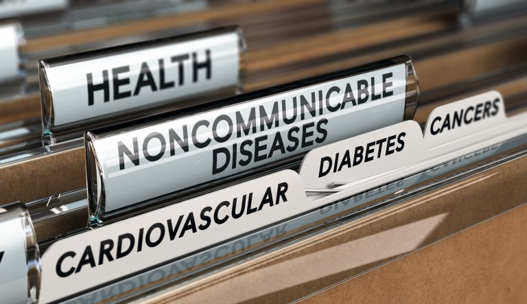
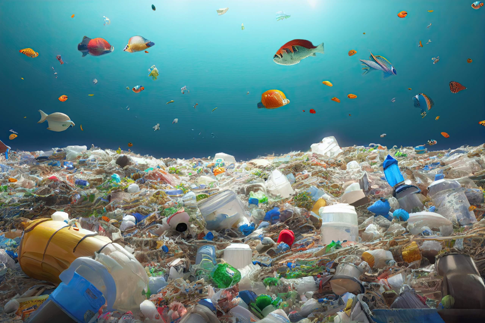

Hi, my name is
Nice Cailie Ineza.
I build AI-powered solutions.
I'm a computer scientist specializing in machine learning, AI safety tooling, and research. Currently working as a Data Scientist at World Data Lab, with research experience in multimodal systems at the University of Cambridge.
About Me
.jpg)
Hello! I'm Nice Cailie Ineza, a computer scientist passionate about leveraging technology to create meaningful impact. As a MasterCard Foundation Scholar at Ashesi University, I've combined technical depth with community leadership.
My work spans ML pipelines for real-world forecasting, real-time AI safety monitoring, mechanistic interpretability experiments, and multimodal research at Cambridge. I write about AI, technology, and ideas on LessWrong, including the tension between AI-assisted writing and authentic voice.
I'm multilingual: French, Swahili, Kirundi, Kinyarwanda, and basic German which helps me collaborate with diverse teams across Africa and Europe.
Software Development
Proficient in Python, Java, and web technologies. Experienced in building robust backend systems, APIs, and intuitive front-end interfaces.
AI & Machine Learning
Specialized in LLM systems, RAG, multimodal learning, and real-time AI monitoring. Built safety tooling with 88%+ accuracy and sub-150ms latency.
AI Safety & Interpretability
Researching geometric representations of neurons for mechanistic interpretability. Designing layered detection pipelines for unsafe AI outputs and steering interventions on residual subspaces.
Writing & Research
Published writer and researcher exploring AI, identity, and social change. Active on LessWrong writing about AI alignment topics and the future of human-AI collaboration.
Experience
Data Scientist
Designing and deploying predictive ML models for large-scale poverty and demographic forecasting across East and West Africa. Building reproducible pipelines with model versioning and evaluation frameworks for high-stakes policy decision-making.
Research Intern — Identity-to-Identity Learning
Designed and experimented with multimodal ML models combining text and audio for identity-preserving speech synthesis. Conducted literature review on model limitations, failure modes, and alignment considerations for identity-replication systems.
Front End Developer
Designed accessible, responsive interfaces for non-literate users using React. Collaborated with backend engineers to integrate APIs and data-driven features.
Independent Projects
Geometric Representations of Systematic Neurons for Mechanistic Interpretability
Can we detect jailbreaks and harmful completions before they happen — early in the forward pass — by identifying divergence in specific subspaces? And can we intervene on those subspaces without degrading helpful capabilities? Daily experiments on open models (starting with Pythia-1.4B): extracting residual streams, computing refusal vectors, and testing steering interventions. Fully reproducible on a single consumer GPU.
AI Sentinel — Real-Time ML Monitoring & Risk Detection
A FastAPI-based system to monitor LLM outputs in real-time and detect anomalous, unsafe, or manipulative patterns. Layered detection pipelines covering intent classification, domain risk scoring, and manipulation signal detection. 88%+ accuracy with sub-150ms latency — production-ready and suitable for integration into LLM-based systems.
Cross-Platform Photo Sharing App
A photo sharing platform built with a focus on user experience optimization — fast load times, adaptive image delivery, and intuitive interactions. Designed to work seamlessly across platforms and screen sizes, prioritizing reliability and accessibility over complexity.
Peer-to-Peer Trip-Based Delivery Platform
A two-sided platform connecting senders with travelers for secure small-item delivery across Africa and to Europe. Trust-aware matching logic incorporating traveler reputation and delivery history, with an end-to-end user flow designed for safety and reliability.
Featured Research

Evaluating the WHO-PEN Framework for Cardiovascular Disease Management in Ghana
Evaluates the WHO-PEN framework for managing cardiovascular diseases in underserved Ghanaian communities using a mixed-methods approach, surfacing challenges in data systems, staffing, and medication supply.
Use of Machine Learning for the Optimization of Genetic Circuits in Synthetic Biology
Applied Genetic Algorithms, SVMs, and Neural Networks to optimize genetic circuit design in E. coli, achieving 92% accuracy in predicting promoter efficacy using RegulonDB and EcoCyc datasets.
Intelligent Emotion Recognition System
Trained and fine-tuned emotion recognition models achieving 86% classification accuracy. Built reproducible training pipelines and a lightweight inference visualization UI.
i2i: Identity to Identity — Deep Persona Replication Through Conversational Response, Voice, and Facial Expressions
Research at the University of Cambridge on replicating a person's identity by synthesizing conversational patterns, vocal characteristics, and facial expressions using multimodal data.
Writing
I am definitely missing the pre-AI writing era
A reflection on how the pressure to sound perfect — with or without AI — can strip the authentic voice from technical writing. Written after drafting a first public technical post and confronting what gets lost in the pursuit of polish.
Read on LessWrongIn Search of Hope
A harrowing first-person account of a young girl's survival during an earthquake — written in response to the 2023 Turkey earthquake, capturing the trauma of loss and desperate searching amid chaos.
Read Article
Justice under Water
A global commons piece on climate and sustainability — exploring the consequences of plastic pollution in the sea through the lens of environmental justice.
Read ArticleCommunity Impact
Kwiga — Burundi Tech Hackathon
Organized a national hackathon for Burundian CS students in final year and graduate programs, creating a space for local tech talent to compete and connect.
Judicial Electoral Council
Led the review and implementation of the ASC constitution and revived the Ashesi Social Honor Code, impacting the entire student body.
Tedx Ashesi University
Co-organized TEDx 2023, coordinating the curation team and speaker selection.
Millennium Fellowship
Directed initiatives promoting arts in rural communities, coordinating impactful projects across multiple communities.